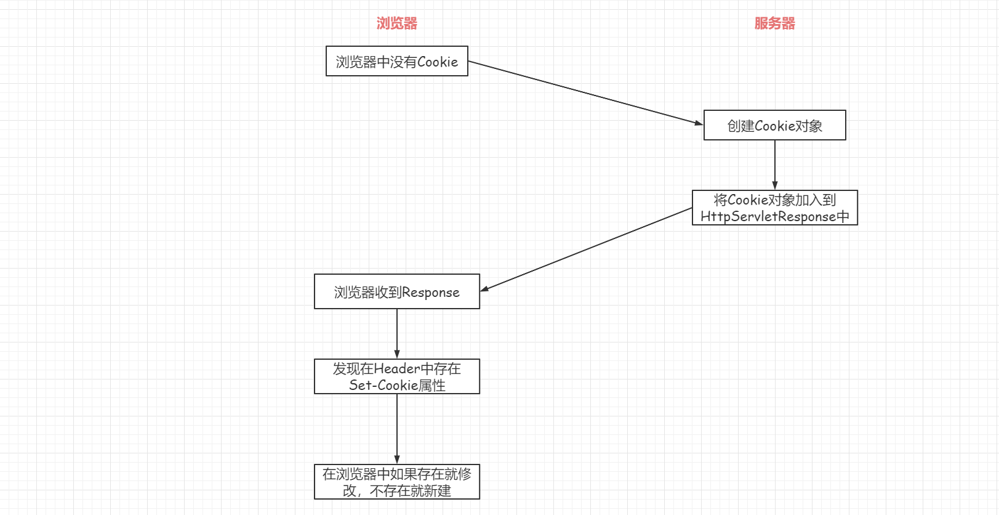
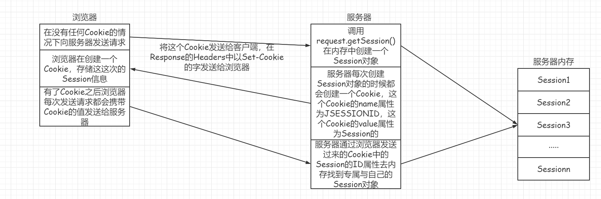

Cookie与Session
穷且益坚，不坠青云之志
会话技术
概念
会话是浏览器和服务器之间的多次请求和响应。从浏览器访问服务器开始，到访问服务器结束，浏览器关闭为止的这段时间产生的多次请求和响应，合起来叫做浏览器和服务器之间的一次会话。
会话技术解决的是客户端与服务器之间的通信问题，通过会话技术，可以将每个用户的数据以cookie、session的形式存储，方便以后用户访问Web资源的时候使用。
不能使用HttpServletRequest存储信息的原因？
在一次会话中，存在多次请求和响应，而浏览器客户端的每一次请求都会产生一个HttpServletRequest对象，它只会保存此次请求的信息，而无法读取其他HttpServletRequest中存储的信息。
不能用ServletContext的原因？
ServletContext是被整个web应用所共享，将数据存到这里，无法准确区分信息具体是属于谁的。
会话技术分为两个类别：
客户端会话技术 —— Cookie
服务端会话技术 —— Session
客户端会话技术——Cookie
Cookie是servlet发送给web浏览器的少量信息，它将你在网站上输入的一些内容或者一些选项记录下来，当下一次访问同一个网站的时候，服务器会主动去查询这个cookie资料，如果存在的话，就会根据其中的内容，提供一些特别的功能，例如记住账号密码等等。
一个Cookie拥有一个名称、一个值和一些可选属性，比如注释、路径和域限定符、最大生存时间和版本号。（对于这些属性的运用，在某些浏览器中存在bug，谨慎使用），每个Cookie不能超过4kb。
创建Cookie
Cookie通过HttpServletResponse的addCookie()方法将Cookie设置到HttpResponse的Headers的Set-Cookie属性。
创建一个通知浏览器存储cookie的Controller：
@RequestMapping("/create")
public void create(HttpServletResponse response){
Cookie cookie=new Cookie("k1","v1");
response.addCookie(cookie);
}通过浏览器访问这个Controller的时候，利用浏览器的开发者工具，可以在HttpResponse的Headers属性中看到设置的Cookie的内容
Connection: keep-alive
Content-Length: 0
Date: Mon, 12 Jul 2021 12:35:55 GMT
Keep-Alive: timeout=60
Set-Cookie: k1=v1
同时Cookie的值也可以在浏览器的开发者工具中的Application选项中选中Cookie来查其值。
服务端获取Cookie
服务器端获取Cookie的方式为从HttpServletRequest的Cookie字段中拿到对应的属性值，其中即为getCookies()方法
@RequestMapping("/get")
public String get(HttpServletRequest request){
Cookie[] cookies = request.getCookies();
for (Cookie cookie:cookies){
System.out.println("【"+cookie.getName()+"="+cookie.getValue()+"】");
}
return "cookie";
}修改Cookie的值
修改Cookie的值有两种方式：
第一种是直接新建一个同名Cookie，然后覆盖掉之前的值
@RequestMapping("/update") public String update(HttpServletResponse response){ System.out.println("修改cookie"); Cookie cookie=new Cookie("k1","newv1"); response.addCookie(cookie); return "index2"; }先查找到需要修改的Cookie对象，调用
setValue()方法修改Cookie的值，Cookie的查找只能通过循环遍历的方式来查找，根据Cookie的Name属性进行匹配查找@RequestMapping("/update") @ResponseBody public String update(HttpServletRequest request,HttpServletResponse response){ Cookie[] cookies=request.getCookies(); if(cookies!=null&&cookies.length>0){ for (Cookie cookie : cookies) { if(cookie.getName().equals("k1")){ cookie.setValue("newValue"); } } } return "更新完成"; }
对于Cookie的值有如下规定：
Cookie的值不应该包含空格、方括号、圆括号、等号、逗号、双引号、斜杠、问号、@符号、冒号和分号。空值在所有浏览器上的行为不一定相同。如果必须要使用可以通过Base64进行编码。
Cookie生命控制
Cookie的生命控制指的是如何管理Cookie什么时候被销毁掉，主要是通过serMaxAge()方法来设置其生命周期。
该方法有需要添加一个int类型的参数：
- 当参数为正数的时候，表示Cookie存活的秒数
- 当参数为负数的时候，表示浏览关闭之后Cookie就失效，默认值为-1
- 当参数为0的时候，表示Cookie马上失效
@RequestMapping("/life")
@ResponseBody
public String defaultLife(HttpServletRequest request,HttpServletResponse response){
Cookie cookie=new Cookie("defaultLife","defaultLife");
cookie.setMaxAge(5);
response.addCookie(cookie);
return "设置完成";
}Cookie的路径设置
Cookie的Path属性可以有效的过滤哪些Cookie会发送给客户端端，哪些不会被发送给Cookie。通过setPath()方法为Cookie设置Path属性，对于Path属性的解析如下：
假如现在CookieA的Path属性为：http://localhost:8080/；CookieB的Path属性为：http://localhost:8080/Wind/
情况一：在http://localhost:8080/a.html下
CookieA会发送，因为满足其Path属性，但是CookieB不会被发送
情况二：在http://localhost:8080/abc/a.html下
CookieA会发送，CookieB也会发送
在SpringMVC中会将@RequestMapping值作为Cookie的默认值
Cookie —— 免用户名登陆实战
首先书写一个登录页页面：
<!DOCTYPE html>
<html lang="en">
<head>
<meta charset="UTF-8">
<title>Title</title>
<link rel="stylesheet" href="../plugins/fontawesome-free/css/all.css">
<link rel="stylesheet" href="../plugins/bootstrap-table/bootstrap-table.min.css">
<link rel="stylesheet" href="../dist/css/bootStrap-4.0/css/bootstrap.css">
<link rel="stylesheet" href="../dist/css/adminlte.css">
<script src="../plugins/jquery/jquery.js"></script>
<script src="../plugins/jquery/jquery.cookie.js"></script>
<script src="../plugins/bootstrap/js/bootstrap.bundle.js"></script>
<script src="../plugins/bootstrap/js/bootstrap.js"></script>
<script src="../plugins/bootstrap-table/bootstrap-table.min.js"></script>
<script src="../plugins/bootstrap-table/bootstrap-table-zh-CN.js"></script>
</head>
<body>
<div class="container">
<div class="card card-outline card-danger col-md-6 mt-5 mx-auto">
<div class="card-header">
<h2 class="card-title">免登陆测试</h2>
</div>
<div class="card-body">
<div class="form-group row" style="line-height: 40px;">
<label for="username" class="col-md-2 text-center align-content-center">用户名</label>
<input type="text" name="username" class="form-control col-md-10">
</div>
<div class="form-group row" style="line-height: 40px;">
<label for="password" class="col-md-2 text-center align-content-center">密码</label>
<input type="password" name="password" class="form-control col-md-10">
</div>
</div>
<div class="card-footer row justify-content-center">
<button id="login" class="btn col-md-6 btn-primary">登陆</button>
</div>
</div>
</div>
</body>
<script>
$('input[name="username"]').val($.cookie("username"))
$("#login").click(() => {
var username = $('input[name="username"]').val();
var password = $('input[name="password"]').val();
if (username == null || username=="" || password == null || password == "" ) {
alert("请输入完成的用户信息")
} else {
console.log("username="+username+"&password="+password);
$.post({
url:"../../cookie/login",
data:{
username:username,
password:password
},
success:res=>{
alert(res)
}
})
}
})
</script>
</html>后端对应一个登陆的接口：
@RequestMapping(value = "/login",method = RequestMethod.POST)
@ResponseBody
public String login(
@RequestParam("username")String username,
@RequestParam("password")String password,
HttpServletResponse response){
if("panhao".equals(username)&&"123456".equals(password)){
Cookie cookie=new Cookie("username",username);
cookie.setMaxAge(20);
cookie.setPath("/login.html");
response.addCookie(cookie);
System.out.println("登陆成功");
return "登陆成功";
}else {
System.out.println("登陆失败");
return "登陆失败";
}
}实现在20s的时间内，退出浏览器，再次进入的时候可以自动填写用户名。
服务端会话技术——Session
Session就是会话，它是用来维护一个客户端和服务器之间关联的一种技术。每个客户端都有自己的一个Session会话，Session会被保存在服务器端。
创建Session
通过HttpServletRequest的getSession()方法创建，第一次调用该方法的时候表示创建一个Session对象；往后的每次一调用都是获取到该Session对象。
@RequestMapping("/create")
@ResponseBody
public String create(HttpServletRequest request,HttpServletResponse response){
HttpSession session=request.getSession();
//判断当前Session是否是最新的Session
boolean isNew=session.isNew();
//获取当前Session的ID
String id=session.getId();
return "该Session的id为："+id+",该Session是否是最新的："+isNew;
}在浏览器输入http://localhost:8080/session/create 就可以返回对象的字符串，第一次返回的Session为最新的Session，再次刷新会发现isNew的值由true变为false。
Session域中存取数据
Session的域中一样是可以存取数据的，使用setAttribute()与getAttribute()方法实现数据的设值和取值。
@RequestMapping("/set")
@ResponseBody
public String set(HttpServletRequest request,HttpServletResponse response){
request.getSession().setAttribute("key1","value1");
return "设置完成";
}
@RequestMapping("/get")
@ResponseBody
public Object get(HttpServletRequest request,HttpServletResponse response){
return request.getSession().getAttribute("key1");
}Session的生命周期控制
Session与Cookie一样都可以对其生命周期进行控制，可以通过setMaxInterval(int interval)来设置Session的存活时间（单位是秒），默认的超时时长为1800秒即30分钟。（因为在Tomcat的服务器中有默认的配置，Session-Config，表示Tomcat下面的所有Session都是默认有效30分钟）
也可以通过getMaxInterval()方法来获取Session的存活时间。
@RequestMapping("/life")
@ResponseBody
public void life(HttpServletRequest request,HttpServletResponse response){
HttpSession session=request.getSession();
session.setMaxInactiveInterval(3);
}Session的超时机制是指在一次会话中两次请求之间间隔的最长时间，当每次请求都间隔小于3秒的时候，Session永远不会超时销毁。
当setMaxInterval()方法的时候：
- 参数为整数表示超时的秒数
- 参数为负数表示永不超时（几乎不使用）
让当前Session马上超时无效需要调用方法invalidate()。
浏览器与Session之间关联

Cookie与Session的区别
- Cookie是一种发送到客户浏览器的文本串，并保存在客户端的硬盘上，可以用来在某个Web站点会话间持久化数据
- Session其实就是指用户从到达某个特定主页到离开为止的那段时间。Session其实就是利用Cookie进行信息处理，当用户首先进行了请求之后，服务端就在用户浏览器上创建一个Cookie，这个Cookie的name属性就是JESSIONID，value属性就是新创建的Session的ID属性。
- cookie和session的共同之处在与：cookie和session都会用来跟踪浏览器用户身份的会话方式
- cookie与session的区别就是：cookie保存在客户端而session保存在服务端
- cookie不是很安全，别人可以分析存放在本地的cookie并进行cookie欺骗，单个cookie在客户端的限制为4kb
cookie欺骗是指盗取、修改、伪造的内容来欺骗Web系统，并得到相应的权限或者进行相应权限操作的一种攻击方式
 wechat
wechat alipay
alipay